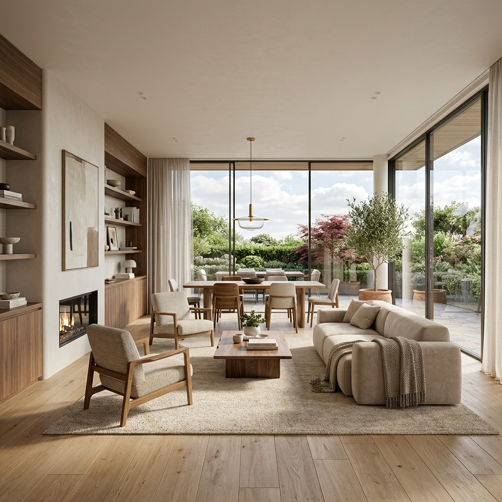

There's a quiet assumption baked into most of this year's "best AI rendering tools" lists: that the way into AI visualization is a subscription. You pick a paid plugin, you wire it into your model, you start paying monthly. But if you already work in Archicad, you've had a free AI renderer sitting in the application for a while now — the AI Visualizer, built on Stable Diffusion, generating text-prompted images directly from your 3D view. It shows up in the roundups as a footnote, usually right before the page pivots to selling you something else.
That footnote treatment does a disservice to a real question. For a working practice, the choice isn't "AI or no AI" — it's "the free thing I already have, or the paid thing everyone keeps recommending." Those are very different decisions, and the answer is genuinely "it depends." So let's do the comparison properly: what each tool is actually for, and the conditions under which you'd reach for one over the other.
What Archicad's AI Visualizer actually is
The native Visualizer is a text-to-image AI layer that runs against your current 3D view inside Archicad. You frame a shot in the model, describe the look you want — material, mood, time of day, surroundings — and it returns a stylized render built on a Stable Diffusion model. Because it reads from the view you've already set up, it inherits your composition and rough massing for free, and because it's part of the application, there's nothing to install, license separately, or pay per image.
That last point is the one the roundups undersell. It is genuinely free, included with the licence you already pay for, and it puts a working AI render one panel away from the model you're already in. For a practice that has been watching the AI rendering conversation from the sidelines, wondering whether it's worth the cost and setup, the honest answer is that the experiment costs nothing and the tool is already installed.
Its character matches its origins. This is an early-design instrument: fast, loose, prompt-driven, more interested in feel than in fidelity. It's excellent for taking a grey massing study and asking "what if this were warm brick at golden hour" without leaving the software. It is not trying to be a final-frame engine, and judging it as one misses the point.
The free tool that ships inside your BIM app isn't competing with the paid one. It's competing with you doing nothing at all — and on that contest it wins easily.
What a Veras subscription actually buys
Veras, now running on its 2026 engine, plays a different game. Where the native Archicad tool is a text-prompt instrument bolted to one application, Veras is built as a cross-platform AI visualization layer with a few capabilities that matter once you move past pure exploration.
The first is reference-image input. Instead of describing a look in words and hoping, you can feed Veras a photograph, a material sample, a plan or even a napkin sketch and have it steer the output toward that reference. For matching a client's mood board or holding a specific material language across images, that's a real lever the prompt-only native tool doesn't give you.
The second is control and consistency. Veras is engineered to hold the geometry of the model more tightly and — crucially — to keep a set of images looking like the same project: same materials, same light, same world across four or eight views. That set-level consistency is the single hardest thing for a single-shot AI renderer to do, and it's exactly what a presentation deck lives or dies on.
The third is reach. Veras integrates into seven BIM and CAD platforms, not one. If your studio runs Archicad alongside Revit, SketchUp, Rhino or Vectorworks, a single AI workflow that follows you across all of them has an organizational value the native, Archicad-only tool can't match.
A no-cost, in-application AI renderer that turns your current 3D view into a stylized image from a text prompt. Best understood as the fastest possible way to explore look and feel during concept work — with zero added cost or setup. It trades the control, reference-image input and cross-platform reach of paid tools for the simple fact that it's already there and free.
The comparison, dimension by dimension
Lined up side by side, the two tools sort into a clean pattern — not "better and worse," but "explore and present."
| Dimension | Archicad AI Visualizer (free) | Veras (paid) |
|---|---|---|
| Cost | Free with your licence | Subscription |
| Setup | Already in the app | Plugin per platform |
| Input | Text prompt only | Text + reference image (photo/plan/sketch) |
| Geometric control | Looser, prompt-led | Tighter, model-anchored |
| Set consistency | Shot-by-shot, varies | Built to hold across a set |
| Platform reach | Archicad only | Seven BIM/CAD platforms |
| Best phase | Concept & exploration | Concept through near-final |
Read the table as a map, not a scoreboard. The free column wins on cost, setup and immediacy; the paid column wins on control, consistency and reach. Nothing wins everything, and any roundup that ranks one strictly above the other is collapsing two different jobs into one number.
When the free native tool is genuinely enough
Be honest about how most AI imagery actually gets used in a small or mid-size practice, and the free tool covers more ground than its footnote status suggests. Reach for the native Visualizer when:
- You live in Archicad. If it's your primary modeller, the tool is already where your work is — no round trip, no second app.
- The image's job is to think, not to sell. Concept exploration, internal review, "should this be brick or timber" — the loose, fast, prompt-driven mode is the right mode here.
- You're testing whether AI rendering belongs in your workflow at all. The honest, zero-cost way to find out is to use the one you already own before you pay for a better one.
- Budgets are tight and the imagery is early-stage. Spending nothing to communicate an idea that may not survive the next meeting is simply good practice.
When you should actually pay
The case for a subscription gets strong the moment the image stops being a sketch and starts being a deliverable. Move to Veras (or a comparable paid layer) when:
- You need a consistent set. A presentation of six images that must read as one project is precisely where single-shot text prompting falls down and a set-aware engine earns its fee.
- The building in the image has to be the building you designed. When fidelity to your actual geometry and openings matters — client sign-off, planning context, anything defensible — tighter control is worth paying for.
- You're matching a reference. A specific material palette or a client's mood board is far easier to hit with reference-image input than with words alone.
- Your studio runs more than one CAD tool. One AI workflow across Archicad, Revit, Rhino and the rest has a coordination value that a single-app tool structurally can't offer.
Our take: start free, pay on purpose
The smartest move for most Archicad practices isn't to pick a side — it's to use both in sequence. Start with the free native Visualizer for everything early: exploration, internal reviews, the dozen throwaway directions that never leave the studio. You already own it, it's one panel away from your model, and it's more than capable for work whose job is to help you think. Treating it as a footnote means leaving a genuinely useful, already-paid-for tool switched off.
Then pay deliberately, for a specific deficiency you can name. Don't subscribe to Veras because a roundup told you to; subscribe when you hit the wall the free tool can't clear — a presentation set that has to stay consistent, geometry that has to be exact, a reference you have to match, or a multi-CAD studio that needs one workflow everywhere. That's a purchase you can justify in a sentence, which is the only kind worth making. Free for the thinking, paid for the deliverable — and never the subscription you bought because everyone else had one.
We test AI rendering tools the way you'd actually use them — across the whole arc of a project, free tools and paid ones alike — and publish the version with the trade-offs marked. Join the studio newsletter for the field notes, or read our companion look at what AI rendering actually costs a small firm.
Comparison based on the publicly described capabilities of Archicad's native AI Visualizer and Chaos Veras as surfaced in 2026 industry coverage; feature sets evolve and should be verified against the current products. No affiliate relationship with Graphisoft, Chaos or any tool named.